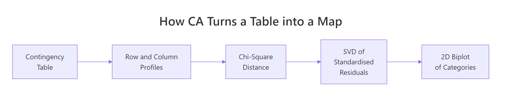
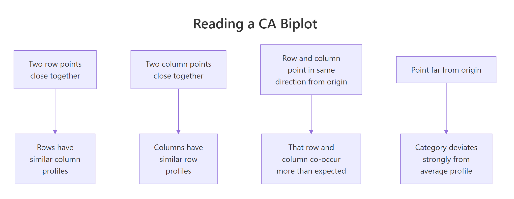
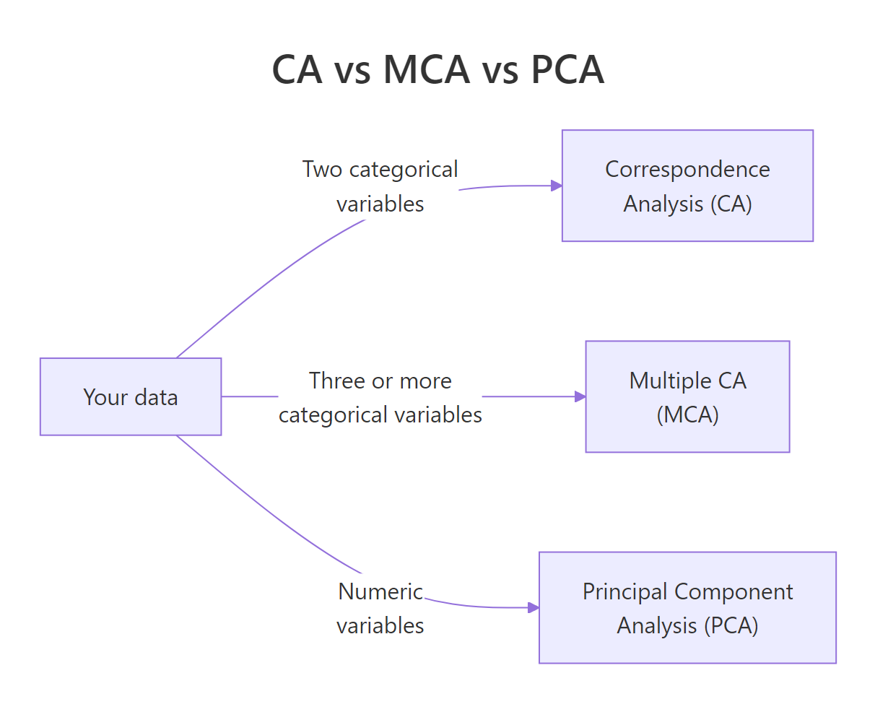

Correspondence Analysis in R: Visualise Categorical Associations in 2D Space
Correspondence analysis (CA) takes a contingency table of two categorical variables and turns it into a 2D map where row and column categories sit close together when they co-occur more than chance would predict. In R, FactoMineR::CA() plus factoextra gives you the fit, the coordinates, and the biplot in three lines of code.
How does correspondence analysis turn a contingency table into a map?
A two-way table of counts is easy to tabulate, hard to see. If you have 13 household chores across 4 "who does it" categories, that's 52 cells of numbers. Your eye cannot spot the pattern. CA rearranges those 52 cells into a scatterplot where categories that behave alike land near each other. We'll fit it on the housetasks dataset from FactoMineR, then peek at the theory.
Before any math, let's see the payoff. The block below loads FactoMineR and factoextra, fits CA on the 13-by-4 housetasks table, and draws the biplot.
The plot places each chore (row, blue) and each doer category (column, red) on the same coordinate system. Laundry, cooking, and tidying cluster near Wife. Repairs and driving cluster near Husband. Holidays and finances drift towards Jointly. The biplot recovers the gendered division of chores from a pile of counts without you writing a single comparison.

Figure 1: CA compresses a contingency table into a 2D map in four steps.
Try it: Swap the column order of housetasks (put Husband first, Wife last), refit CA, and confirm the coordinates come back unchanged. CA doesn't care about the order in which you list categories.
Click to reveal solution
Explanation: Reordering columns permutes the coordinate system's axes or flips their signs, but it cannot change the geometry of the point cloud. The chi-square distances that CA optimises depend on profiles, not on the order in which categories sit in the table.
What does the CA biplot actually show?
Now that you've seen the biplot, let's be strict about what it does and does not mean. There are two common display modes, and mixing them up is the classic CA misread. In the default symmetric biplot, both row and column points get principal coordinates. In the asymmetric biplot, one set keeps principal coordinates and the other switches to standard coordinates.
The block below redraws the housetasks CA using the asymmetric rowprincipal map, so row-to-column distance becomes directly interpretable as association strength.
In this asymmetric view, a row chore's projection onto a column arrow is its deviation from the independence model. Repairs projects strongly onto the Husband arrow and negatively onto Wife, telling you repairs are a male-dominated chore in this survey. Arrows that point in similar directions (for example Wife and Alternating both sitting above the axis) indicate column profiles that share row-profile shape.

Figure 2: The four rules for reading a CA biplot.
map = "rowprincipal" or "colprincipal", or interpret angles from the origin instead of straight-line distances.Try it: Redraw the biplot in colprincipal mode and describe one thing that flips compared with rowprincipal.
Click to reveal solution
Explanation: rowprincipal preserves chi-square distance between row profiles; colprincipal preserves it between column profiles. Which one to use depends on which side of the table you want to interpret geometrically. For a survey of chores-by-doer, rowprincipal is usually the more natural story because you ask "which doer does each chore?" rather than the reverse.
Why are inertia and chi-square distance the engine of CA?
You can skip to the next section if you only need the practical code. The intuition below helps you justify results to reviewers who ask "but what does the biplot minimise?"
Every row in a contingency table has a row profile: its counts divided by its row total. That profile is a discrete probability distribution over columns, saying "given you are in this row, which columns are you likely to fall into?" CA's job is to place rows so that rows with similar profiles land near each other.
The distance metric CA uses is chi-square distance. It is like Euclidean distance but it divides each squared difference by the column mass (the column's total share of the sample). Rare columns get louder; common columns get quieter.
$$\chi^2_{\text{dist}}(i, i') = \sum_{j} \frac{1}{c_j} \left(\frac{n_{ij}}{r_i} - \frac{n_{i'j}}{r_{i'}}\right)^2$$
Where:
- $n_{ij}$ = observed count in row $i$, column $j$
- $r_i$ = sum of row $i$
- $c_j$ = column mass (column sum divided by grand total $N$)
- $i, i'$ = any two row indices
The total inertia of the table is the weighted sum of squared chi-square distances from every row profile to the average row profile. It equals Pearson's chi-square statistic divided by $N$. So the number CA is decomposing is literally the independence test statistic.
Let's confirm this numerically. The block below computes total inertia two ways: from CA() output and from chisq.test().
The two numbers match because CA is, under the hood, a singular-value decomposition of the standardised residual matrix whose sum of squares equals $\chi^2 / N$. Everything else in CA, the coordinates, the eigenvalues, the contributions, falls out of that SVD.
chisq.test() warns about small expected counts, CA still runs.* The biplot will still show you the association structure, but a formal chi-square test* may be underpowered. Interpret the geometry; skip the p-value.Try it: Given the total inertia of 1.115 for housetasks (N = 1744), recover the chi-square statistic by hand.
Click to reveal solution
Explanation: The identity inertia = chi-square / N rearranges to chi-square = inertia * N. This is how the independence test statistic gets recycled as a decomposable quantity in CA.
How much of the structure does each axis capture?
CA returns as many dimensions as min(rows - 1, cols - 1). The housetasks table is 13 by 4, so CA returns 3 dimensions. Each dimension has an eigenvalue equal to the inertia it captures. The ratio of eigenvalue to total inertia tells you what fraction of the association the axis has absorbed.
You want the first two dimensions to absorb enough of the total inertia that the 2D plot is trustworthy. A common rule of thumb is 60-80%. The block below prints the full eigenvalue table and draws a scree plot.
Two dimensions absorb 88.6% of the inertia, so the 2D biplot you saw earlier is not hiding much structure. The drop from dim 2 (40%) to dim 3 (11%) creates a natural elbow. Dimension 3 is mostly noise here and can be safely ignored.
plotly. A 2D picture of a truly 3D association is a caricature, not a summary.Try it: From the eigenvalue table, read off the cumulative inertia captured by dims 1 and 2.
Click to reveal solution
Explanation: The cumulative.variance.percent column adds proportions as you walk down the dimensions. Row 2 contains the cumulative coverage of Dim 1 plus Dim 2.
Which categories drive each dimension?
Two diagnostics turn a pretty picture into a report you can defend. Contributions (contrib) say how much each category contributes to a given axis's inertia; they sum to 100 per axis. Quality of representation (cos2) says how well the chosen dimensions picture each category; they sit between 0 and 1.
The first block plots contributions to dimension 1 for both rows and columns, so you can name the axis by its top contributors.
The row chart is led by Laundry, Main_meal, Repairs, Driving. The column chart is led by Wife on one side and Husband on the other. That's your Dim 1 label: wife-coded chores versus husband-coded chores. The dashed line marks the contribution an "average" category would make (100 / number of categories); anything above it is a meaningful driver.
Now cos2. A category with cos2 near 1 on dims 1:2 is well pictured by your 2D biplot. A category with low cos2 sits near the origin because those two dims miss it.
Most row chores are well represented. Official is the notable exception because it splits along dimension 3 (the "alternating" axis). If you only read the 2D plot, you'll underestimate how distinctive Official is.
A faster way to get a ranked, statistical read is dimdesc(). It returns, per dimension, the categories sorted by their contribution direction and tags each with a p-value.
The output gives you named directions with significance. Positive estimates lie on one side of the axis, negative on the other, and the p-value lets you cut off noise. Dim 1 cleanly divides Repairs-side chores from Laundry-side chores with p-values below any reasonable threshold.
Try it: Using descr$\Dim 2\$row, name Dim 2 by writing down its strongest positive and negative drivers.
Click to reveal solution
Explanation: Dim 2 contrasts joint-effort tasks (Holidays) against tasks done by one person taking turns (Official, Insurance). That is, it captures the "shared versus rotated" character of each chore, orthogonal to the wife-versus-husband split on Dim 1.
How do I add supplementary rows or columns without distorting the map?
Sometimes you want to project a category onto a map without letting it influence the axes. A survey rerun adds a new wave of respondents; a clinical study has a reference group you want to overlay; a market survey has a "total" column you don't want driving the fit. CA calls these supplementary rows or columns.
CA() takes row.sup and col.sup arguments. Supplementary categories get projected onto the existing axes after they are fit on the active categories.
The axes are now defined purely by the Wife versus Husband split. Alternating and Jointly still appear on the plot but they got zero weight during the fit. Their positions tell you where they sit relative to the wife-husband axis without them pulling the solution towards themselves.
Try it: Make Wife a supplementary row (so active rows are rows 2:13) and refit. Does the new biplot still separate wife-coded from husband-coded tasks?
Click to reveal solution
Explanation: Even after removing Laundry from the fit, the other 12 chores still split cleanly by doer, and Laundry projects right where you'd expect, near Wife. That's a sanity check: Laundry is consistent with the pattern the other rows define, not an outlier that was single-handedly creating the axis.
Practice Exercises
Two capstone exercises that combine multiple ideas from the tutorial. Work through them using only functions covered above.
Exercise 1: Run CA on occupational mobility
The built-in occupationalStatus dataset is an 8 by 8 contingency table of father's occupation versus son's occupation from a British social mobility study. Fit CA, report the cumulative inertia captured by the first two dimensions, and name the leading pole of Dim 1 using the top row contributor. Save the result to my_mobility_ca.
Click to reveal solution
Explanation: Dim 1 captures a low-status versus high-status contrast. Categories 1-2 (lowest status) sit on one side; 7-8 (highest) sit on the other. The first two dimensions capture about 87% of the association, so a 2D map of mobility is a fair summary.
Exercise 2: Build a small brand-attribute survey inline
Create a 4-by-4 contingency table where rows are car brands c("Brand_A", "Brand_B", "Brand_C", "Brand_D") and columns are attributes c("Reliable", "Innovative", "Affordable", "Prestigious"). Use the counts below. Fit CA, identify which brand has the highest contribution to Dim 1, and check its cos2 on dims 1:2 to confirm it is well represented. Save the fit to my_brand_ca.
Counts to use:
Reliable Innovative Affordable Prestigious
Brand_A 70 20 85 15
Brand_B 35 80 20 45
Brand_C 25 55 30 80
Brand_D 90 25 75 20Click to reveal solution
Explanation: Brand_D has the strongest contribution to Dim 1 and its cos2 on dims 1:2 is near 1, so the 2D map captures it well. The biplot reads as two axes: "everyday-value" (Reliable, Affordable) versus "aspirational" (Innovative, Prestigious). Brand_B owns the innovation slot; Brand_C owns the prestige slot; Brand_A and Brand_D fight over the value slot.
Complete Example: Hair-colour and eye-colour associations
Let's pull every step into one end-to-end pipeline. We'll use HairEyeColor, a 3D contingency array shipped with base R (Hair by Eye by Sex, 592 students). We collapse over Sex to get a 4-by-4 Hair-by-Eye table, then walk through the full CA workflow.
Dimension 1 captures 89% of the association on its own, and the first two dimensions together cover 99%. The biplot reads as a clean gradient: Blond hair sits right next to Blue eyes, Black and Brown hair sit near Brown eyes, and Red hair sits near Green eyes. Hazel lands in the middle because it partners with multiple hair colours. In one plot, a 4-by-4 table of numbers has become a story about which hair-eye pairs co-occur more than chance predicts.
Summary
CA turns a two-variable contingency table into a 2D scatterplot you can interpret like any map.
| Concept | What to check | Code |
|---|---|---|
| Fit | Geometry looks interpretable | CA(data, graph = FALSE) |
| Total inertia | Matches chi-square / N | sum(res$eig[, 1]) |
| Axis coverage | Dims 1:2 above 60% | get_eigenvalue(res) |
| Axis drivers | Top contributors flag both poles | fviz_contrib(), dimdesc() |
| Quality | cos2 > 0.5 on dims 1:2 |
fviz_cos2() |
| Extra groups | Project without distorting | row.sup, col.sup |
| Biplot mode | Symmetric for same-side distances; asymmetric for row-column | fviz_ca_biplot(map = "rowprincipal") |
Pick CA when you have exactly two categorical variables. Move to Multiple Correspondence Analysis (MCA) for three or more, and to PCA when your variables are numeric.

Figure 3: Pick CA, MCA, or PCA based on your variable types.
References
- Husson, F., Lê, S., Pagès, J. Exploratory Multivariate Analysis by Example Using R, 2nd Edition, CRC Press (2017). Chapter on Correspondence Analysis. Link
- FactoMineR
CA()reference manual. Link - Kassambara, A. factoextra: Extract and Visualize the Results of Multivariate Data Analyses. Link
- Greenacre, M. Correspondence Analysis in Practice, 3rd Edition, CRC Press (2017).
- Nenadić, O. & Greenacre, M. Correspondence Analysis in R, with Two- and Three-Dimensional Graphics: The
caPackage. Journal of Statistical Software, 20(3), 2007. Link - STHDA, CA Correspondence Analysis in R: Essentials. Link
- Programming Historian, Correspondence Analysis for Historical Research with R. Link
Continue Learning
- PCA in R, CA's numeric cousin. Same SVD machinery, different distance metric.
- Exploratory Factor Analysis in R, for modelling latent factors behind numeric items rather than visualising association.
- Cluster Analysis in R, another way to find rows that behave alike, using numeric similarity rather than chi-square distance.